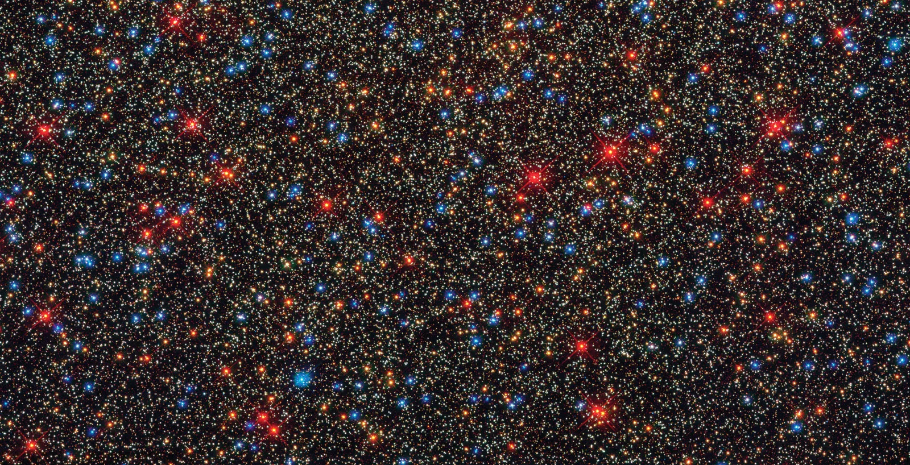

Projects
Pulsating Red Giants in a Globular Cluster: \(\omega\) Centauri
 Image courtesy of Encyclopædia Britannica here.
Abstract: We carried out light-curve and time-series analysis of a sample of 16 pulsating red giants (PRGs) in the globular cluster \(\omega\) Cen, using observations from the ASAS-SN database, and the AAVSO software package VStar. Of the 16 stars, 1 was classified by ASAS-SN as Mira (M), 5 as semiregular (SR), and 10 as “long secondary period” (LSP), i.e., the dominant period was an LSP. We determined pulsation periods (P) for all of them, secondary pulsation periods for 3, possible secondary pulsation periods for 4, and LSPs for 8. This confirms that LSPs are common in Population II stars. In the context of a recent model for LSPs, this implies that many Population II PRGs had planetary companions which accreted gas and dust to become brown dwarfs or lowmass stars, now enshrouded by dust. In this model, the LSP is the orbital period of the hypothetical companion. The amplitudes of the pulsation periods vary by up to a factor of 3.4 on a median time scale of 18 pulsation periods, for reasons unknown. The ratios of LSP/P cluster around 4 and 8, presumably depending on whether P is a fundamental mode or first overtone period. We have augmented our sample with a few stars from the literature to plot period-luminosity relations. Sequences for LSPs, fundamental, and first-overtone pulsation periods are visible. Our results show that the complex variability of the PRGs in \(\omega\) Cen is similar to that of red giants in other stellar systems, and in the field.
Barium Depletion in Canadian Coastal Waters Points to Planktonic Phytoplankton Bloom Intensification in the Arctic
 Image courtesy of National Environmental Satellite, Data, and Information Service here.
Image courtesy of National Environmental Satellite, Data, and Information Service here.
Abstract. Bottom-dwelling organisms in coastal regions are particularly vulnerable to climate change impacts, being both impacted by open ocean and near-surface terrestrial dynamics. Arctic coastal ecosystems, for instance, have experienced sea ice loss, increasing glacial runoff, permafrost melt and erosion, producing ecological cascades that ripple through the marine ecosystem. Here, we present research supported by a growing body of literature suggestive of recent barium (Ba) depletion trends in coastal waters, resulting from larger and longer-lasting phytoplankton blooms. We produce a barium-calcium ratio(Ba/Ca) record from specimens of calcifying coralline red algae (Clathromorphum compactum) collected in the Canadian Arctic Archipelago that show a gradual decrease of barium since the mid-20th century. We suggest that this trend results from the increasing uptake of barium by pelagic (surface-dwelling) phytoplankton, as a consequence of reduced sea ice and increased terrestrial nutrient input from permafrost melt. Contextualized within the wider literature, we propose this algal record as a multi-centennial phytoplankton bloom proxy time series for this region. As we consider future Arctic ecological scenarios, the intensification of phytoplankton blooms may have cascading impacts on coastal marine organisms competing for surface nutrients and light access (e.g., coastal darkening), upper trophic organisms such as seabirds, and Indigenous livelihoods.
Paper is in pre-print, publication link is to follow shortly.